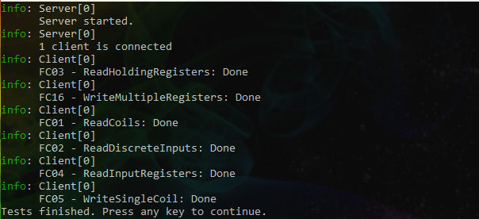

FluentModbus

FluentModbus is a .NET Standard library (2.0 and 2.1) that provides Modbus TCP/RTU server and client implementations for easy process data exchange. Both, the server and the client, implement class 0, class 1 and class 2 (partially) functions of the specification. Namely, these are:
Class 0
- FC03: ReadHoldingRegisters
- FC16: WriteMultipleRegisters
Class 1
- FC01: ReadCoils
- FC02: ReadDiscreteInputs
- FC04: ReadInputRegisters
- FC05: WriteSingleCoil
- FC06: WriteSingleRegister
Class 2
- FC23: ReadWriteMultipleRegisters
Please see the introduction below to get a more detailed description on how to use this library!
Here is a screenshot of the sample console output using a Modbus TCP server and client:

Install the package
Simply start a new .NET Core project with the FluentModbus package installed:
PS> dotnet new console
PS> dotnet add package FluentModbus
Modbus Client Section
Modbus TCP client
A new Modbus TCP client can be easily created with the following code:
var client = new ModbusTcpClient();
Once you have an instance, connect to a server in one of the following ways:
// use default IP address 127.0.0.1 and port 502
client.Connect();
// use specified IP address and default port 502
client.Connect(IPAddress.Parse("127.0.0.1"));
// use specified IP adress and port
client.Connect(new IPEndPoint(IPAddress.Parse("127.0.0.1"), 502))
Modbus RTU client
Alternatively, a new Modbus RTU client can be created with the following code:
// use default COM port settings
var client = new ModbusRtuClient();
// use custom COM port settings:
var client = new ModbusRtuClient()
{
BaudRate = 9600,
Parity = Parity.None,
StopBits = StopBits.Two
};
Once you have an instance, connect using a free COM port:
client.Connect("COM1");
Little-Endian vs. Big-Endian
The Modbus specs define a big-endian data layout, i.e. the most significant byte is sent first. Opposed to this, most modern systems have little-endian memory layout. This requires to convert the data from one layout into the other whenever a Modbus register is access. Additionally, there are also Modbus servers around that work with little-endian data.
Due to this inconsistency it may happen that you get strange numbers from the Modbus server. In that case try one of the following Connect() overloads:
var client = new ModbusTcpClient(...);
client.Connect(..., ModbusEndianness.BigEndian);
var client = new ModbusRtuClient(...);
client.Connect(..., ModbusEndianness.BigEndian);
When you are explicitly specifying the endianness of the data layout in the constructor, the library will correctly handle the data conversion for you.
By default, this library expects little-endian data for compatibility reasons.
A few words to Span<T>
The returned data of the read functions (FC01 to FC04) are always provided as Span<T> (What is this?). In short, a Span<T> is a simple view of the underlying memory. With this type, the memory can be interpreted as byte, int, float or any other value type. A conversion from Span<byte> to other types can be efficiently achieved through:
Span<byte> byteSpan = new byte[] { 1, 2, 3, 4 }.AsSpan();
Span<int> intSpan = MemoryMarshal.Cast<byte, int>(byteSpan);
Span<float> floatSpan = MemoryMarshal.Cast<int, float>(intSpan);
You can then access it like a any other array:
var floatValue = myFloatSpan[0];
The data remain unchanged during all of these calls. Only the interpretation changes. However, one disadvantage is that this type cannot be used in all code locations (e.g. in async functions). Therefore, if you run into these limitations, you can simply convert the returned data to a plain array (which is essentially a copy operation):
float[] floatArray = floatSpan.ToArray();
Read data
Read integer or float
First, define the unit identifier, the starting address and the number of values to read (count):
var unitIdentifier = (byte)0xFF; // 0x00 and 0xFF are the defaults for TCP/IP-only Modbus devices.
var startingAddress = (ushort)0;
var count = (ushort)10;
Then, read the data:
var shortData = client.ReadHoldingRegisters<short>(unitIdentifier, startingAddress, count);
As explained above, you can interpret the data in different ways using the generic overloads, which does the MemoryMarshal.Cast<T1, T2> work for you:
// interpret data as float
var floatData = client.ReadHoldingRegisters<float>(unitIdentifier, startingAddress, count);
var firstValue = floatData[0];
var lastValue = floatData[floatData.Length - 1];
Console.WriteLine($"Fist value is {firstValue}");
Console.WriteLine($"Last value is {lastValue}");
If you want to keep the data for later use or you want to use the Modbus client in asynchronous methods, convert the Span<T> into a normal array with ToArray():
async byte[] DoAsync()
{
var client = new ModbusTcpClient();
client.Connect(...);
await <awaitsomething>;
return client.ReadHoldingRegisters(1, 2, 3).ToArray();
}
Note: The generic overloads shown here are intended for normal use. Compared to that, the non-generic overloads like
client.ReadHoldingRegisters()have slightly better performance. However, they achieve this by doing fewer checks and conversions. This means, these methods are less convenient to use and only recommended in high-performance scenarios, where raw data (i.e. byte arrays) are moved around.
Read boolean
Boolean values are returned as single bits (1 = true, 0 = false), which are packed into bytes. If you request 10 booleans you get a Span<byte> in return with a length of 2 bytes. In this example, the remaining 6 bits are fill values.
var unitIdentifier = (byte)0xFF;
var startingAddress = (ushort)0;
var quantity = (ushort)10;
var boolData = client.ReadCoils(unitIdentifier, startingAddress, quantity);
You can check if a certain bit (here: bit 2) is set with:
var position = 2;
var boolValue = ((boolData[0] >> position) & 1) > 0;
See also this overview to understand how to manipulate single bits.
Write data
Write integer or float
The following example shows how to write the number 4263 to the server:
var unitIdentifier = (byte)0xFF;
var startingAddress = (ushort)0;
var registerAddress = (ushort)0;
var quantity = (ushort)10;
var shortData = new short[] { 4263 };
client.WriteSingleRegister(unitIdentifier, registerAddress, shortData);
// read back from server to prove correctness
var shortDataResult = client.ReadHoldingRegisters<short>(unitIdentifier, startingAddress, 1);
Console.WriteLine(shortDataResult[0]); // should print '4263'
Note: The Modbus protocol defines a basic register size of 2 bytes. Thus, the write methods require input values (or arrays) with even number of bytes (2, 4, 6, ...). This means that a call to
client.WriteSingleRegister(0, 0, new byte { 1 })will not work, butclient.WriteSingleRegister(0, 0, new short { 1 })will do. Since the client validates all your inputs (and so the server does), you will get notified if anything is wrong.
If you want to write float values, the procedure is the same as shown previously using the generic overload:
var floatData = new float[] { 1.1F, 9557e3F };
client.WriteMultipleRegisters(unitIdentifier, startingAddress, floatData);
Write boolean
It's as simple as:
client.WriteSingleCoil(unitIdentifier, registerAddress, true);
Modbus Server Section
Modbus TCP server
First, you need to instantiate the Modbus TCP server:
var server = new ModbusTcpServer();
Then you can start it:
server.Start();
Option 1 (asynchronous operation)
There are two options to operate the server. The first one, which is the default, is asynchronous operation. This means all client requests are handled immediately. However, asynchronous operation requires a synchronization of data access, which can be accomplished using the lock keyword:
var cts = new CancellationTokenSource();
var random = new Random();
var server = new ModbusTcpServer();
server.Start();
while (!cts.IsCancellationRequested)
{
var intData = server.GetHoldingRegisterBuffer<int>();
// lock is required to synchronize buffer access between
// this application and one or more Modbus clients
lock (server.Lock)
{
intData[20] = random.Next(0, 100);
}
// update server buffer content only once per second
await Task.Delay(TimeSpan.FromSeconds(1));
}
server.Dispose();
Option 2 (synchronous operation)
The second mode is the synchronous mode, which is useful for advanced scenarios, where a lock mechanism is undesirable. In this mode, the hosting application is responsible to trigger the data update method (server.Update()) regularly:
var cts = new CancellationTokenSource();
var random = new Random();
var server = new ModbusTcpServer(isAsynchronous: false);
server.Start();
while (!cts.IsCancellationRequested)
{
var intData = server.GetHoldingRegisterBuffer<int>();
intData[20] = random.Next(0, 100);
server.Update();
await Task.Delay(TimeSpan.FromMilliseconds(100));
}
Note that in the second example, the Task.Delay() period is much lower. Since we want coordinated access between the application and the clients without locks, we need to ensure that at certain points in time, the application is safe to access the buffers. This is the case when the IsReady propery is true (when all client requests have been served). After the application finished manipulating the server data, it triggers the server to serve all accumulated client requests (via the Update() method). Finally, the process repeats.
Modbus RTU server
When you need a Modbus RTU server, you need to instantiate it like this providing a unitIdentifier, which must be in the range of 1..247 and unique for each Modbus server or slave, respectively:
var server = new ModbusRtuServer(unitIdentifier: 1);
Then you can start it e.g. on COM port 1:
server.Start(port: "COM1");
As for the TCP server, there are two options to operate the server (synchronous and asynchronous). See above for details.
Input and Holding registers
As written above in the client section, the Modbus specs define a big-endian data layout, i.e. the most significant byte is sent first. Opposed to this, most modern systems have little-endian memory layout. This requires to convert the data from one layout into the other whenever a Modbus register is access. Additionally, there are also Modbus servers around that work with little-endian data.
Both Modbus servers (TCP and RTU) are enabled to work with both kinds of byte layouts. Originally, the Modbus specs only define 2-byte (16-bit) registers but with the FluentModbus servers you are able to overcome this limitation and interpret the data as any value type you want (more details to this can be found in the Span<T> section above).
Since the actual data type in the registers is unknown, the FluentModbus server cannot handle the data layout conversion in a fully automated way. For this, a little help of the user is required:
// Get a reference to the holding registers.
var registers = server.GetHoldingRegisters();
// Write a double value (0.85) to address 1.
// With an 8-byte double value, this will be written into
// the holding registers 1 - 4.
registers.SetBigEndian<double>(address: 1, value: 0.85);
Note: Always keep the data type in mind to avoid setting an integer if you wanted to write a short value:
// This will write an 4 byte integer
registers.SetBigEndian(address: 1, value: 99);
// These will write a 2 byte short
registers.SetBigEndian(address: 1, value: (short)99);
registers.SetBigEndian<short>(address: 1, value: 99);
There are complementary methods for little-endian data and methods for reading data. The full list of Span<short> extension methods is:
void registers.SetBigEndian<T>(...);
void registers.SetLittleEndian<T>(...);
Span<short> registers.GetBigEndian<T>(...);
Span<short> registers.GetLittleEndian<T>(...);
Coils and Discrete Inputs
There is not endianness problem with bit-oriented data, so no special methods are required here, but to ease access there are some convenience methods:
// Get buffer
var coils = server.GetCoils(); // or server.GetDiscreteInputs()
// Set bit.
coils.Set(address: 1, value: true);
var value = coils.Get(address: 1); // should return 'true'
// Unset bit
coils.Set(address: 2, value: false);
var value = coils.Get(address: 1); // should return 'false'
// Toggle bit
coils.Toggle(address: 2, value: false);
var value = coils.Get(address: 1); // should return 'true'
Frame validation
It might happen that a server should not support all Modbus functions or only a limited set of registers. In that case simply assign a validation action to the server:
var server = new ModbusTcpServer()
{
RequestValidator = (functionCode, address, quantityOfRegisters) =>
{
if (functionCode == ModbusFunctionCode.WriteSingleRegister)
return ModbusExceptionCode.IllegalFunction;
else if (address < 5 || address > 15)
return ModbusExceptionCode.IllegalDataAddress;
else
return ModbusExceptionCode.OK;
}
};
See a full example in the sample section.
See also
This implementation is based on http://www.modbus.org/specs.php:
- MODBUS APPLICATION PROTOCOL SPECIFICATION V1.1b3
- MODBUS over Serial Line Specification and Implementation Guide V1.02
- MODBUS MESSAGING ON TCP/IP IMPLEMENTATION GUIDE V1.0b